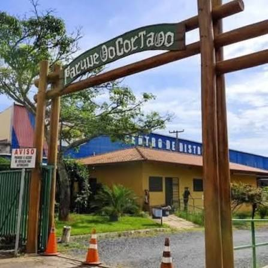

Parque Ecológico do Cortado
Localização: Taguatinga - DF

Área verde
O Parque Ecológico do Cortado é uma área de preservação e contato com a natureza em Taguatinga. Confirme previamente as condições de acesso e visitação.

O Parque Ecológico do Cortado é uma área de preservação e contato com a natureza em Taguatinga. Confirme previamente as condições de acesso e visitação.